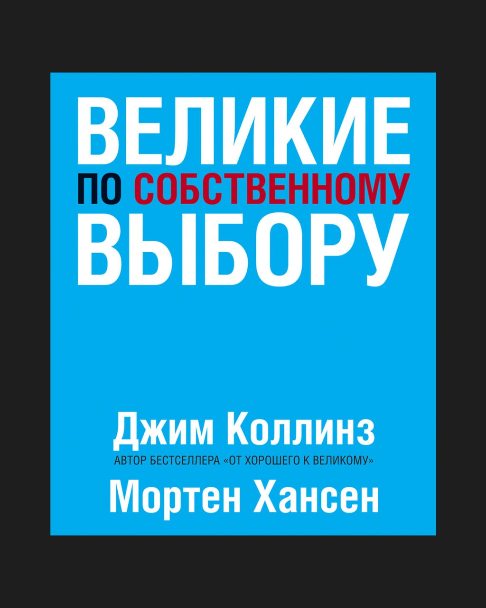

Книга про долгосрочное стратегическое мышление и про то, как сохранять управляемость на дистанции, когда обстоятельства меняются, а неопределенность растет.
Коллинз показывает, что устойчивость редко связана с талантом, мотивацией или силой характера. Гораздо чаще она строится на дисциплине, ритме и способности принимать последовательные решения.
Самый показательный пример — полярная экспедиция Руаля Амундсена. Погодные условия в Антарктиде были одинаково непредсказуемы для всех экспедиций, но именно подход Амундсена позволял сохранять управляемость: одинаковый режим, одинаковая нагрузка, одинаковые решения каждый день. Дисциплина защищает от импульсивных решений в моменты эмоциональной нестабильности. В результате он дошел до цели, а более «яркие» и амбициозные лидеры — нет.
В карточках — ключевые идеи книги.
Карточки
Устойчивость важнее эффективности
Коллинз показывает неприятную для рационального мышления вещь: в нестабильной среде эффективность перестает быть главным преимуществом. Потому что оптимизированные системы работают хорошо только тогда, когда условия предсказуемы, а отклонения редки. В условиях давления и неопределенности сильнее оказываются те, кто сознательно жертвует скоростью и оптимальностью ради устойчивости и запаса прочности.
Дисциплина заменяет мотивацию
В книге отражено, что люди, выдерживающие длинную дистанцию, почти не опираются на мотивацию. Они не ждут правильного состояния, настроения или вдохновения, чтобы действовать. Вместо этого они заранее задают ритм и правила, которые работают даже тогда, когда ничего не хочется. Именно дисциплина, а не внутренняя энергия, позволяет не скатываться в хаос под давлением.
Маленькие шаги - форма зрелости
Когда ситуация осложняется, возникает соблазн резко и глобально отреагировать, но Коллинз показывает, что такие действия усиливают риск. Устойчивые люди и системы выбирают небольшие, контролируемые действия, потому что их можно корректировать.
Продуктивная паранойя
Одна из самых сильных идей книги - продуктивная паранойя Это готовность к тому, что среда может ухудшиться в любой момент. Такая позиция позволяет заранее создавать запас прочности и не зависеть от удачи. В отличие от оптимизма, она не ослепляет и не усыпляет бдительность.
Контроль начинается с фокуса
Коллинз постоянно возвращается к простой логике: устойчивые люди не пытаются контролировать внешний мир. Они концентрируются на том, что действительно зависит от них: собственные решения, реакция. Этот фокус снижает ощущение хаоса и возвращает чувство опоры. Даже когда внешняя ситуация нестабильна, внутренний порядок позволяет сохранять ясность мышления.
Устойчивость нельзя включить в кризисе
Один из самых важных выводов книги в том, что устойчивость не может появиться в момент давления - в кризис проявляются выработанные заранее привычки и стандарты. Если в спокойное время не было дисциплины, запаса прочности и ограничений, в сложный момент их уже не создать. Именно поэтому важно выстраивать подготовку до того, как начнутся первые проблемы.
Выживают не самые умные, а самые последовательные
Коллинз разрушает миф о том, что успех в сложных условиях определяется интеллектом или талантом. Гораздо важнее оказывается способность годами придерживаться выбранной логики поведения. Последовательност влет скучно, но именно она позволяет не принимать поспешных решений под давлением.